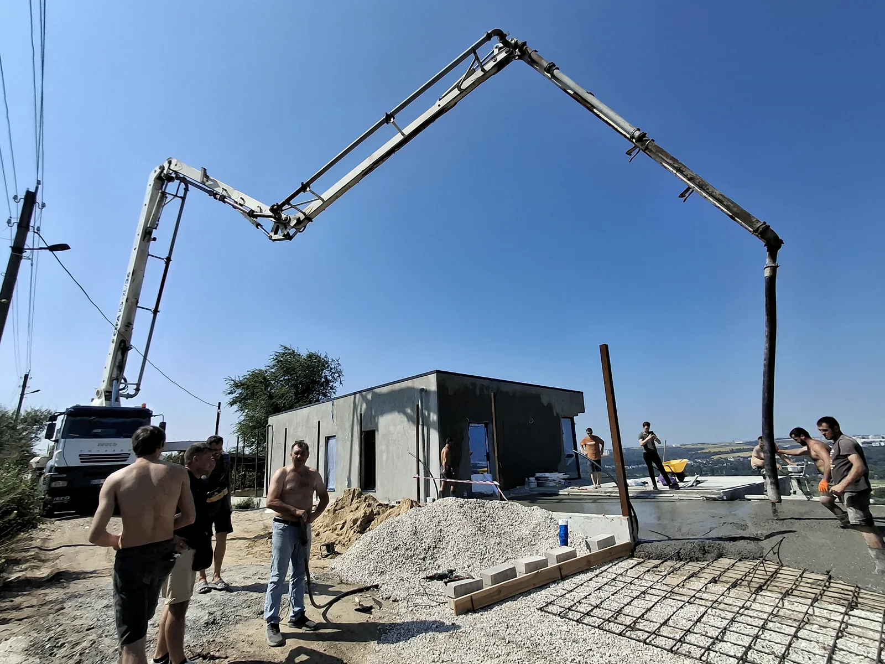
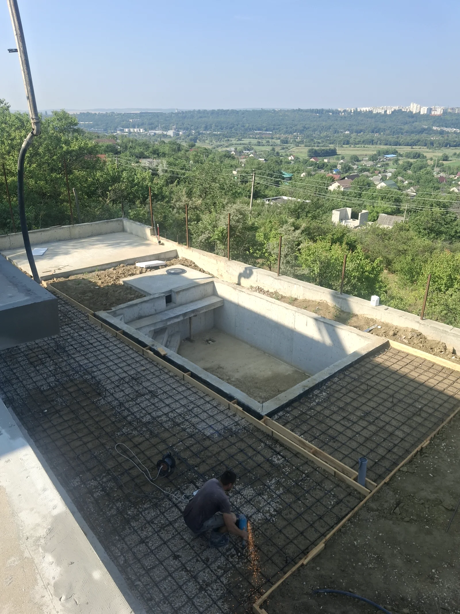
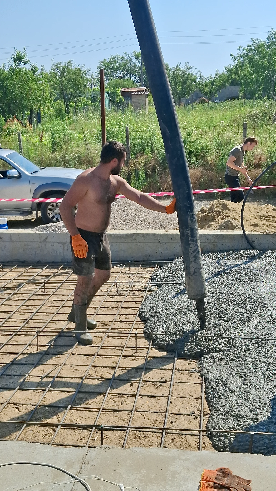
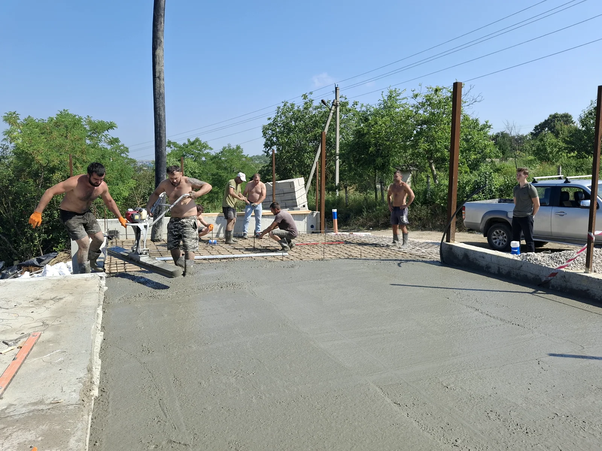

PHOTO FROM THE CONDR GRUP ARCHIVE
PHOTO FROM THE CONDR GRUP ARCHIVEPORT MALL
Port Mall
Condr Grup carried out the complete demolition scope for works undertaken at Port Mall between 2023 and 2026.
See case study ↗Archive Condr Grup
A selection of real Condr Grup photos taken during concrete, structure, fit-out, renovation and demolition works.
Flagship projects
Condr Grup has delivered work at major commercial, industrial and hospitality properties in Chișinău. Below, we outline the team’s specific role in each project.
PHOTO FROM THE CONDR GRUP ARCHIVECondr Grup carried out the complete demolition scope for works undertaken at Port Mall between 2023 and 2026.
See case study ↗ REPRESENTATIVE PHOTO FROM THE CONDR GRUP ARCHIVE
REPRESENTATIVE PHOTO FROM THE CONDR GRUP ARCHIVEComplete turnkey fit-out of the Bomond restaurant at Port Mall, from interior construction through to preparing the space for use.
See case study ↗Construction work carried out in 2020 for the Kaufland Botanica store at 99/2 Decebal Boulevard, near Dacia Boulevard.
See case study ↗Capital renovation work carried out in 2026 at the Terra Avia company office in Chișinău.
See case study ↗ PHOTO FROM THE CONDR GRUP ARCHIVE
PHOTO FROM THE CONDR GRUP ARCHIVEPouring of 400 m² of concrete and power-trowel surface finishing on 4 Feredeului Street
See case study ↗Participation in construction work at the Radisson Blu Leogrand Hotel in Chișinău in 2016.
See case study ↗And many other commercial, industrial and residential projects, as well as work delivered for private clients.
Information about the completed work is supplied by Condr Grup. Images marked “property image” identify the property or brand and are not photographs taken during Condr Grup’s work.
Jobsite archive
Filter by type to see genuine images from concrete, structural, fit-out, renovation and demolition stages.


We add new projects and photographs as details are confirmed and publication is approved.
Băc · process




Feredeu · process


Do you have a similar project?